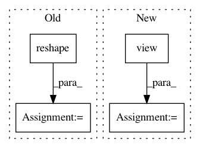

371ffe8f69e9f76978dd4254534285129f0f3d6c,examples/common.py,,distribution_accuracy,#Any#Any#,68
Before Change
tiled_a = tf.tile(tiled_a, [1, int(tiled_a.get_shape()[0]), 1])
tiled_b = b
tiled_b = tf.reshape(tiled_b, [1, int(tiled_b.get_shape()[0]), int(tiled_b.get_shape()[1])])
tiled_b = tf.tile(tiled_b, [int(tiled_b.get_shape()[0]), 1, 1])
difference = tf.abs(tiled_a-tiled_b)
difference = tf.reduce_min(difference, axis=1)
difference = tf.reduce_sum(difference, axis=1)
return tf.reduce_sum(difference, axis=0)
def batch_accuracy(a, b):
After Change
This works best on a large batch of small inputs.
shape = a.shape
tiled_a = a.view(shape[0], 1, shape[1]).repeat(1, shape[0], 1)
tiled_b = b.view(1, shape[0], shape[1]).repeat(shape[0], 1, 1)
difference = torch.abs(tiled_a-tiled_b)
difference = torch.min(difference, dim=1)[0]
difference = torch.sum(difference, dim=1)
return torch.sum(difference, dim=0)
def batch_accuracy(a, b):
In pattern: SUPERPATTERN
Frequency: 4
Non-data size: 4
Instances
Project Name: HyperGAN/HyperGAN
Commit Name: 371ffe8f69e9f76978dd4254534285129f0f3d6c
Time: 2020-06-22
Author: martyn@255bits.com
File Name: examples/common.py
Class Name:
Method Name: distribution_accuracy
Project Name: osmr/imgclsmob
Commit Name: f68e69b3377dbb7e04cc5ab9d63109699843a435
Time: 2018-12-07
Author: osemery@gmail.com
File Name: pytorch/pytorchcv/models/channelnet.py
Class Name: ChannelwiseConv2d
Method Name: forward
Project Name: metalbubble/moments_models
Commit Name: 70e4855f5608c4481dfffd5f762e310d631d06c3
Time: 2020-10-09
Author: mmonfort@mit.edu
File Name: test_model_CAM.py
Class Name:
Method Name: returnCAM
Project Name: osmr/imgclsmob
Commit Name: 4d6aeeca8a6397fb0c2ce1aa0679155c21c6cbbb
Time: 2019-03-03
Author: osemery@gmail.com
File Name: pytorch/pytorchcv/models/isqrtcovresnet.py
Class Name: Triuvec
Method Name: backward